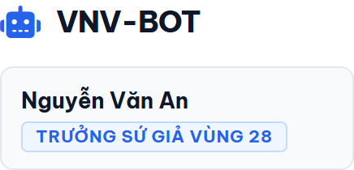

🚀 Bài 1: Khởi Động Bot & Đăng Nhập Zalo Web
Hướng dẫn bước đầu tiên khi nhận thư mục bot trên máy tính mới.
1. Khởi động phần mềm
-
1Mở thư mục bot
Mở thư mục
VNV-Bot-v2.0.0bạn vừa tải về (nếu là file zip thì chuột phải chọn Extract All để giải nén). -
2Chạy file VNV-Bot.exe
Nhấp đúp chuột vào file
VNV-Bot.exe(hoặcVNV-Bot.bat). Một cửa sổ nền đen mở ra, bot sẽ tự động khởi tạo môi trường và tự mở trình duyệt web. -
3Đăng nhập tài khoản Vùng
Trình duyệt web hiển thị trang đăng nhập
http://localhost:3000. Nhập tài khoản Vùng của bạn:

Hình 1.1: Giao diện đăng nhập tài khoản Trưởng Vùng / Phó Vùng / Trưởng Cụm
Bảng danh sách tài khoản mặc định:
| Vai trò | Tên đăng nhập | Mật khẩu | Phạm vi quyền hạn |
|---|---|---|---|
| Trưởng Vùng 25 → 31 | Tài khoản Trưởng Vùng được cấp | Mật khẩu riêng được bàn giao | Quản lý Vùng, quét bài, duyệt báo cáo |
| Phó Vùng 25 → 31 | Tài khoản Phó Vùng được cấp | Mật khẩu riêng được bàn giao | Quản lý Vùng, quét bài, duyệt báo cáo |
| Trưởng Cụm 5 | Tài khoản Trưởng Cụm được cấp | Mật khẩu riêng được bàn giao | Giám sát cả 7 Vùng, xuất báo cáo Cụm 5 |
* Lưu ý: Mỗi Vùng và Cụm được Quản trị viên cấp tài khoản riêng biệt nhằm bảo mật dữ liệu và phân quyền đúng phạm vi quản lý.
2. Mở & Đăng nhập Zalo Web (Chỉ cần làm 1 lần)
Để bot có thể đọc tin nhắn và gửi bản nháp báo cáo, bạn cần kết nối tài khoản Zalo của mình:
- Nhìn lên góc trên bên phải màn hình làm việc của Bot, bấm nút [📱 Mở Zalo] màu xanh dương.
- Một cửa sổ trình duyệt Chrome riêng biệt sẽ mở ra trang web
chat.zalo.me. - Mở app Zalo trên điện thoại của bạn, chọn biểu tượng Quét mã QR ở góc trên và quét mã hiển thị trên màn hình máy tính để đăng nhập.

Hình 1.2: Vị trí nút [Mở Zalo] trên góc phải thanh điều hướng
✅ Lưu ý quan trọng: Bạn chỉ cần quét mã QR Zalo đúng 1 lần đầu tiên. Phiên đăng nhập được lưu vĩnh viễn trong thư mục máy tính của bạn, các ngày tiếp theo bot sẽ tự động nhớ đăng nhập mà không cần quét lại.